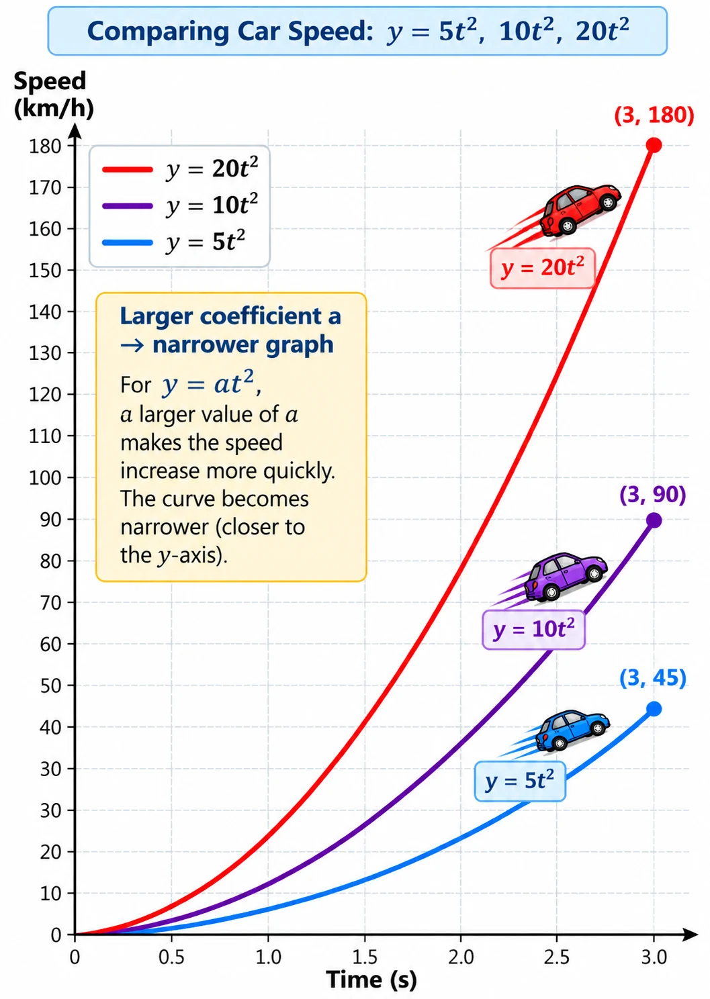
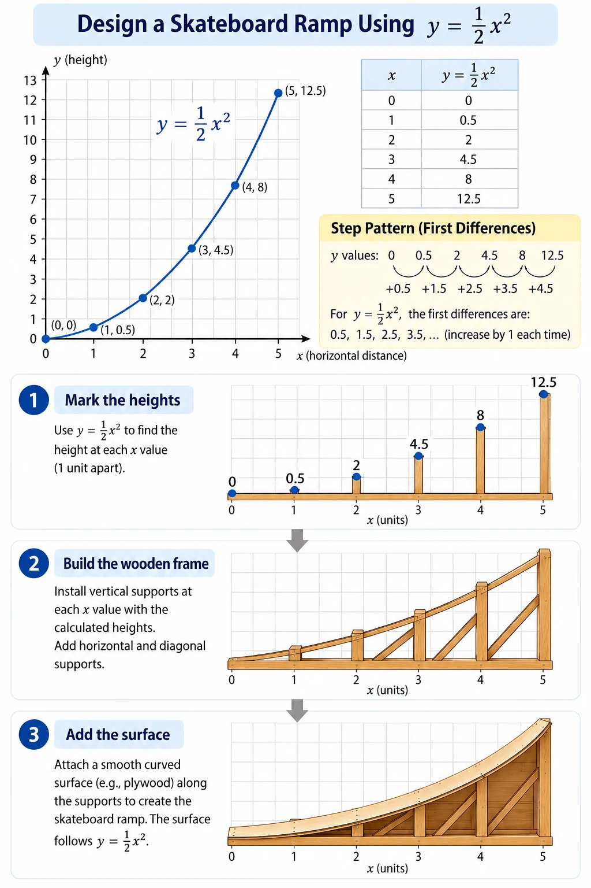

Mathematics in Architecture
Explore geometry, measurement, symmetry, and mathematical design in structures.
Future explorationMathematics is not confined to a textbook. Explore how functions, patterns, geometry, and mathematical models help us understand familiar situations and design things in the world around us.
FUNCTIONS IN MOTION
Follow a car as it accelerates, travels at a steady speed, and slows to a stop. Explore quadratic, constant, and linear functions, rates of change, step patterns, and inverse relationships.
Explore the Car’s Journey →
MATHEMATICS MEETS DESIGN
Use a quadratic model to calculate ramp heights, study first differences, and see how a mathematical rule can guide a practical design.
Explore the Skateboard Ramp →
Explore geometry, measurement, symmetry, and mathematical design in structures.
Future explorationLook for patterns, shapes, ratios, and structure in the natural world.
Future exploration